Steering Rack Assembly - 4 Cylinder
Print
Operation Code: 32.03.01-02
Removal
- Remove front road wheel left side. Refer to procedure.
- Remove front road wheel right side.
Procedure is the same for left side component.
- Remove front anti roll bar. Refer to procedure.
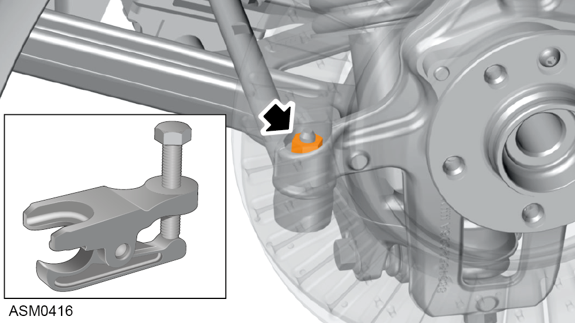
- Loosen nut securing left side track rod end ball joint to hub carrier.
NOTE: Loosen ball joint nut until locking threads are clear of ball joint pin threads.
- Use ball joint splitter to separate left side track rod end from hub carrier.
- Remove and discard nut securing left side track rod end ball joint to hub carrier. Torque 45 Nm.
- Repeat steps 4 to 6 for right side of steering rack.
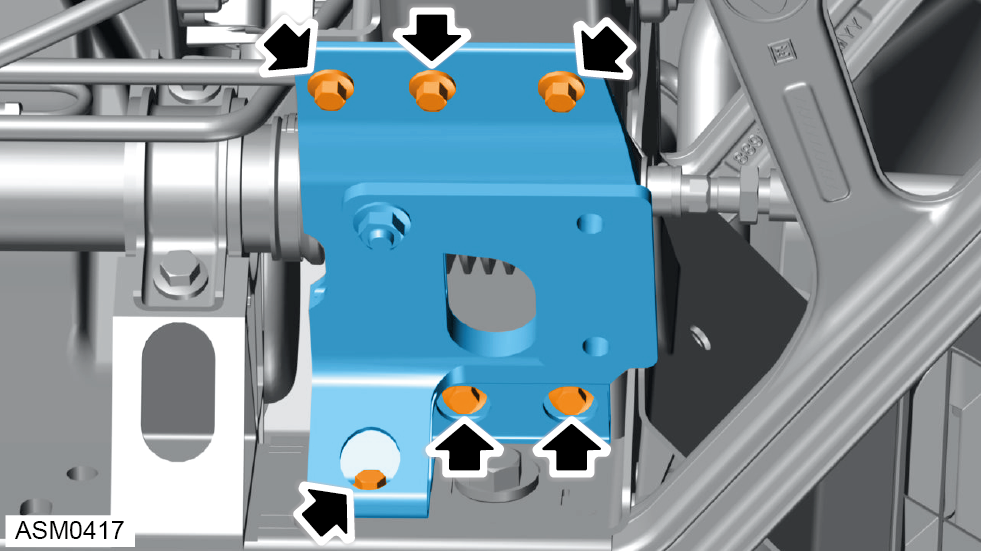
- Remove bolts (x6) securing right side anti-roll bar mounting bracket to front subframe. Torque 24 Nm.
- Remove right side anti-roll bar mounting bracket from front subframe.
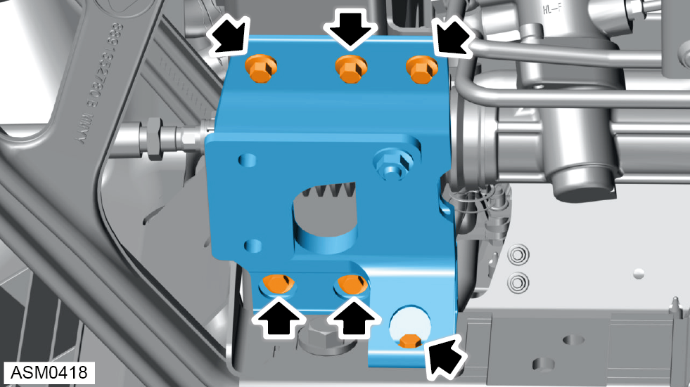
- Remove bolts (x6) securing left side anti-roll bar mounting bracket to front subframe. Torque 24 Nm.
- Remove left side anti-roll bar mounting bracket from front subframe.
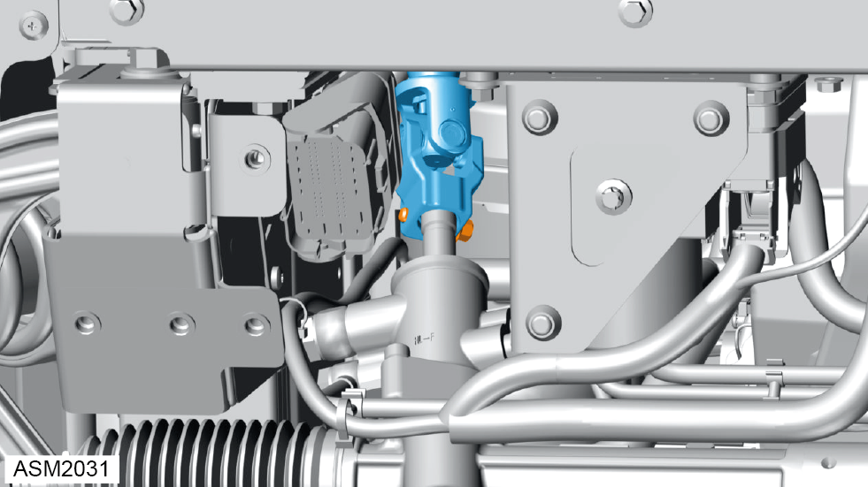
- Remove M8x30 bolt securing lower steering column to steering rack. Torque 24 Nm.
- Disconnect lower steering column from steering rack.
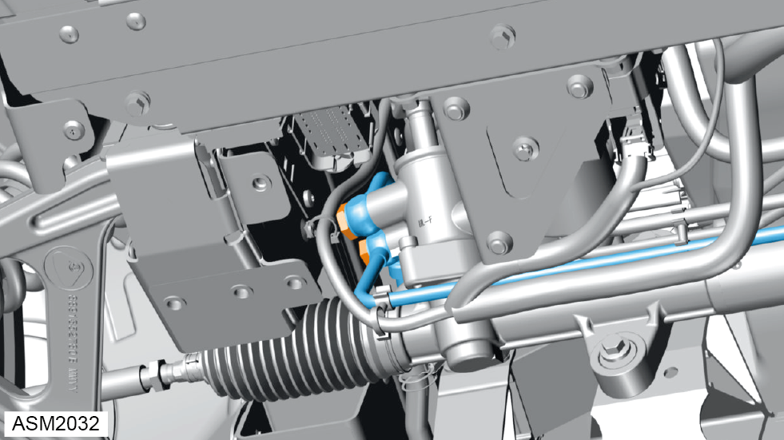
- Remove banjo bolts (x2) securing hydraulic pipes to steering rack. Torque 32 Nm.
 Oil will discharge from hydraulic pipes when removing banjo bolts. Use a container to collect oil.
Oil will discharge from hydraulic pipes when removing banjo bolts. Use a container to collect oil.
Always record quantity and fitted position of washers.
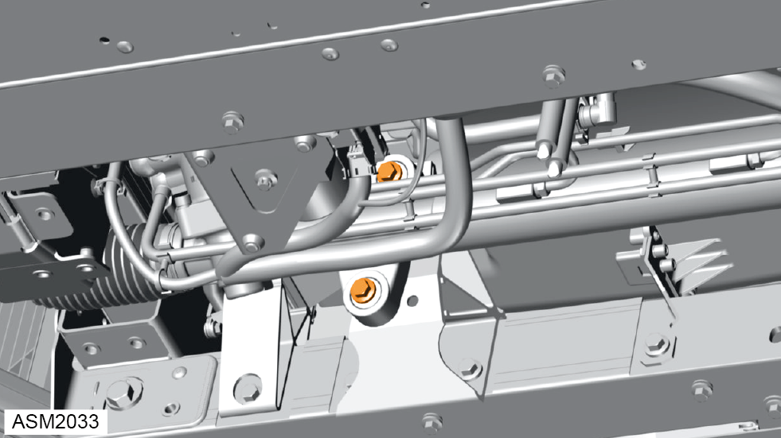
- Remove bolts (x2) securing left side steering rack mounting to front subframe. Torque 45 Nm.
Always record quantity and fitted position of washers.
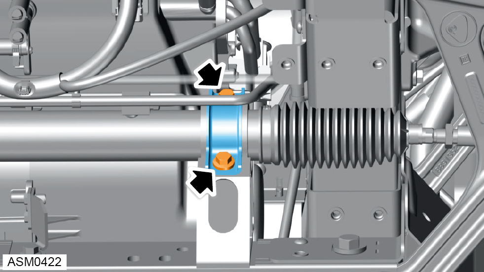
- Remove bolts (x2) securing right side steering rack mounting to front subframe. Torque 45 Nm.
- Remove mounting bracket from steering rack.
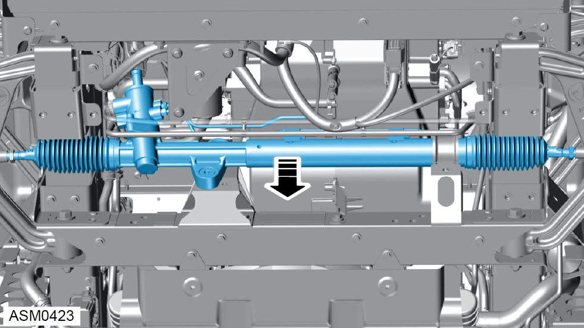
- Remove steering rack from vehicle.
Do not carry out further disassembly if component is removed for access only.
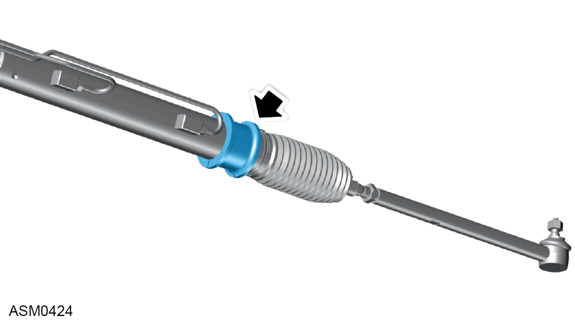
- Remove mounting bush from steering rack.
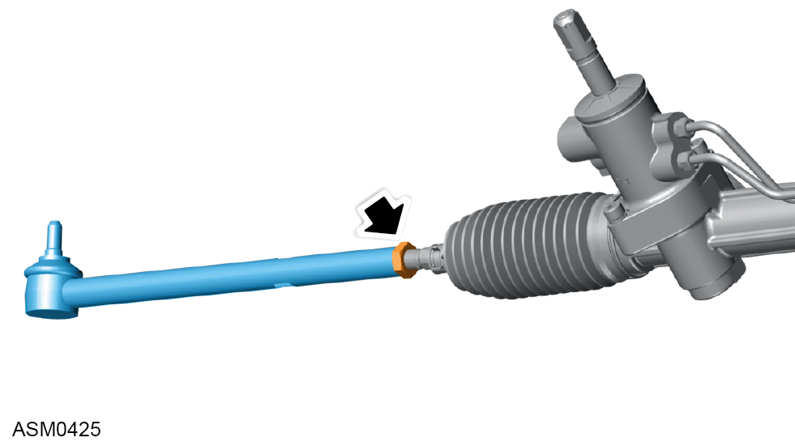
- Loosen nut securing left side track rod end to steering rack. Torque 45 Nm.
Only loosen nut enough to remove track rod end.
- Remove left side track rod end from steering rack.
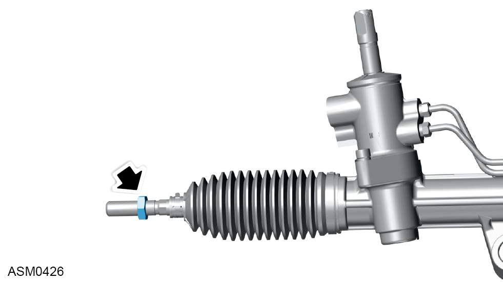
- Record position of nut on steering rack threads.
Recording nut position will assist installation and set up of wheel alignment.
- Repeat steps 20 to 22 for right side of steering rack.
Installation
- Installation is the reverse of removal procedure except for the following:
- Install nuts securing track rod end to steering rack in positions previously recorded.
- Renew all discarded fixings that have been removed during removal procedure.
- Make sure road wheels and steering wheel are in straight ahead position when connecting steering column to steering rack.
- Renew banjo bolt sealing washers.
- Fill power steering system. Refer to technical data.
- Bleed power steering system. Refer to procedure.
- Perform a wheel alignment inspection and adjustment. Refer to procedure.